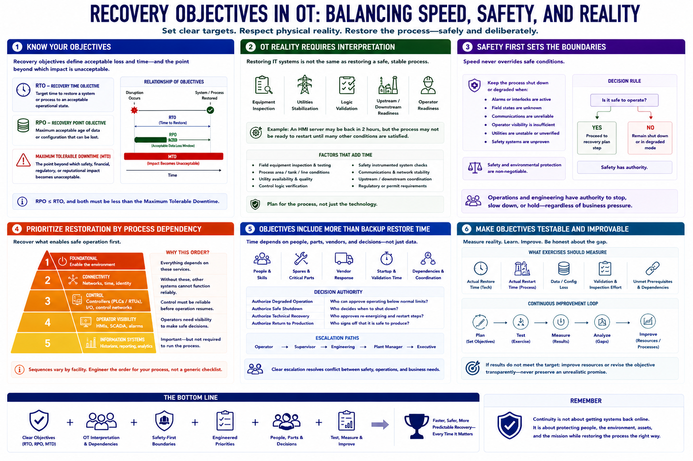

Recovery Objectives and Operational Priorities
Connecting to LMS... Progress: in progress

Narration
A recovery time objective, or RTO, is a target for how quickly a system or process should be restored after disruption. A recovery point objective, or RPO, describes how much data or configuration change can be lost. Maximum tolerable downtime marks the point beyond which impact becomes unacceptable.
These objectives need OT interpretation. Restoring an HMI server in two hours does not mean the process can safely restart in two hours. Equipment may require inspection, utilities may need stabilization, logic may need validation, and upstream or downstream operations may not be ready.
Safety-first decision-making sets boundaries around speed. A process should remain shut down or degraded when alarms, interlocks, field states, communications, or operator visibility cannot be trusted. Business pressure does not change those physical conditions.
Prioritize restoration by process dependency. Foundational utilities, networks, time, identity, controllers, and operator visibility may need to recover before historians or reporting. The exact sequence varies by facility and should be engineered rather than copied from a generic checklist.
Objectives should include people, spares, vendor response, and startup duration, not just backup restore time. Define who can authorize degraded operation, safe shutdown, technical recovery, and return to production. Escalation paths should resolve conflicts between safety, operations, and business needs.
Make objectives testable. Exercises should measure actual restore and restart times, data loss, validation effort, and unmet prerequisites. If results do not meet the target, improve resources or revise the objective transparently rather than preserving an unrealistic promise.